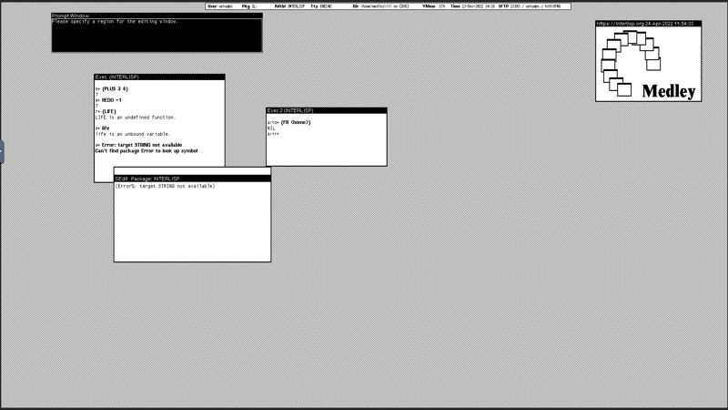

Running Interlisp online is good for experimenting and introducing yourself to the environment. However, anything you create in the online environment should be treated as transient. If you’re interested in developing and experimenting with Lisp programs, you will want to investigate other options. For a first foray, it is a good starting point.
Things to note when running online
Browser compatibility: Older browsers may not support the VNC software we use; it should give you a warning if this is detected.
control-character conflicts: Different browsers may intercept user typing control-characters; for example, control-W might close the entire Medley window, rather than backward-delete a word. There is no standard fix: Using Chrome in “full screen” mode; using a browser extension which captures the control-character for its own operations might help.
No guarantees: In general, Medley has NO WARRANTY, but in particular we make no guarantees that private information will not be revealed, or that your files uploaded to your account will be held securely.
Reliable Internet: You need a solid net connection to our AWS server (currently in Ohio).
You can login as a guest by clicking on the login screen. However, guest sessions are not saved.
or
We suggest you create your own account by clicking on the login screen. Having an account enables you to save your sessions. To create an account, you just need an email address and password. Click Register here on the login screen to create your own account.
or
If you are already registered (created an account), log in and start a Medley Interlisp session. Sessions are preserved for users that login with their own account. However, user account sessions may be deleted after 30 days of inactivity.
Select the Exec you want to run. For this exercise, select Interlisp
Leave the Fill browser window option set.
Select Run Medley.
Your browser will open a window that represents the Interlisp Desktop and looks much like this:

Medley Interlisp
The Interlisp Desktop at startup contains 4 windows of interest:
Prompt Window: The black window at the top of the screen. It is used to display system or application prompts
Exec (INTERLISP) window: The main window where you run functions and develop programs.
Medley logo window: A window containing the Interlisp Medley logo as a bit map.
Status Bar window
Writing a sample Interlisp programs
In the Exec window, type the following:
(PLUS11)
When you complete typing the ending ) the Interlisp interpreter will perform the calculation and return the result.
One thing you probably noticed, the command PLUS is capitalized. It’s not that the developers of Interlisp were always shouting at each other. Rather, when Interlisp was developed computer programming was in its infancy and standards for naming commands were still evolving.
(What is a memory image? How is it different from an image or memory?)
In Interlisp, there are two types of files relevant to managing memory images and updating them across sessions: lisp.virtualmem and .sysout.
The lisp.virtualmem file is a capture of the “current” state of the system (i.e., it is a copy of the virtual memory at a point in time). lisp.virtualmem is written whenever you execute (IL:LOGOUT) and also whenever executing (IL:SAVEVM). You can restart Medley using a lisp.virtualmem and it will pick up essentially where it left off before the LOGOUT or SAVEVM (with the exception that the user can set BEFORE/AFTER and LOGOUT/SAVEVM code that runs before you get control of the restarted lisp.virtualmem).
A .sysout is a virtual memory image produced by MAKESYS (for writing an image for distribution) and SYSOUT (for saving a named checkpoint, e.g. to revert to a previous state if needed), which differ in the way they process the startup options. You can (and most frequently do) start Medley from a sysout file. When Medley starts from a sysout, it automatically runs initialization scripts — a site initialization script followed by a per-user initialization script (if available). A sysout is what you might call “a clean image”.
As for Interlisp Online: except as noted below, every time you Run Medley you are starting up from a sysout file (i.e., from a clean image). The exception is if you check the Resume previous session box. In that case, you will be starting up from the lisp.virtualmem stored for you online (if any) and that was created by the (IL:LOGOUT) at the end of your previous session.
As a registered Interlisp Online user you get the choice of resuming your previous image or starting from a clean image — with the default being starting from a clean image.
For guest logins, there is no Resume previous session because lisp.virtualmem is never preserved for guests.
For registered users, any files that you create (e.g., with IL:MAKEFILE) will also be preserved across sessions online. But these files will never be automatically loaded into the system when you re-start with a clean image — you need to LOAD them explicitly (or add a LOAD to your personal INIT file stored online at {DSK}/home/medley/il/INIT).
 on the login screen. However, guest sessions are not saved.
or
on the login screen. However, guest sessions are not saved.
or on the login screen. Having an account enables you to save your sessions. To create an account, you just need an email address and password. Click Register here on the login screen to create your own account.
or
on the login screen. Having an account enables you to save your sessions. To create an account, you just need an email address and password. Click Register here on the login screen to create your own account.
or